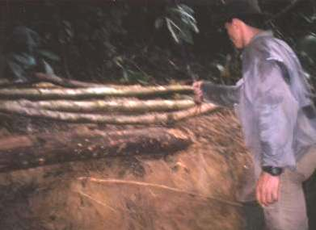
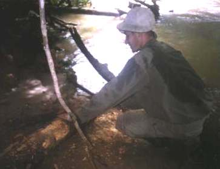

Ondanks dat er in het buitenzeil van de tentconstructie geen kuilen meer zaten, was ik die nacht toch nat geworden door de regen. De naden van het zeil bleken niet helemaal waterdicht te zijn, terwijl we de naden toch met een naadverdichter behandeld hadden. Gelukkig hadden we een flesje naadverdichter mee. Weer een stapje dichter bij een 100% droge nacht!
|  |
Het hout voor het frame van het vlot. We leggen het hier op een hogere en dus veilige plek |
We begonnen 's morgens fanatiek aan het vlot te werken. Als we hier ooit nog weg willen, moet er immers wel eens wat werk verzet worden! De rivier was de afgelopen nacht trouwens enorm gestegen en was hoger dan ooit! Het hout dat we gevonden hadden en zo hoog mogelijk (minstens 3 meter hoog) bij de oever gelegd hadden, bleek nog maar net boven het rivierniveau te liggen. Bijna al ons hak- en zaagwerk weggespoeld! Met behulp van de parang (groot kapmes), jungle-messen, touw en de gezaagde stammen maakten we het frame van het vlot. Dit frame moest zo stevig mogelijk. Dit bereikten we door met de parang diepe gleuven in de stammen te hakken waar de stammen elkaar kruisen. Op deze wijze verzinken de stammen in elkaar, zodat ze geen kant meer op kunnen nadat ze met touw aan elkaar gebonden zijn. Door het hakken raak je in deze hitte en hoge luchtvochtigheid binnen enkele minuten compleet bezweet.
Wat later begonnen Steven en ik aan het vuur te werken. Ondanks onze opgedane ervaring, bleek het weer een karwei van uren. Enkele houtjes waren iets minder nat, omdat we die de vorige avond onder onze hangtent gelegd hadden. Dat bleek onze redding. Nadat we nog meer brandhout gezocht hadden en het vuur een klein beetje stabiel werd, aten we mie, dronken we thee en koffie en aten we nog een keer mie. Eindelijk had ik even de tijd om mijn dagboek een beetje bij te werken, terwijl Richard en Steven beneden bij de rivier water gingen filteren. Na zo'n 5 minuten kwamen ze al terug, want de waterfilter bleek te zijn gebroken. Door de grote kracht die bij het pompen nodig was, braken de plastic richels die het schroefdraad vormden. En dat bij een apparaat van zo'n 400 gulden! Gelukkig hadden we sterke lijm mee, zodat we de filter lijmden en lieten drogen.
Nu weer aan het vlot werken. Met zijn drieën gingen we nu hout zoeken: gamachen aan, pet op, mouwen omlaag en met onze messen, parang en zaag door de jungle op zoek naar rechte, niet te dikke en
|  |
Andre bewerkt het hout met de parang. Na enkele minuten flink hakken in de jungle loop je al leeg. |
We zitten nu al vier dagen in de jungle in 'the middle of nowhere' en op de één of andere manier is niemand bang dat we niet meer terug zullen komen. Optimisme zegeviert! Voordat we weer verder gingen met het vlot, aten we 2 maal 3 pakjes indo-mie en dronken we thee en koffie. Heerlijk! Terwijl Ries aan het eten ging beginnen, werkten Steven en ik nog door aan het vlot. Er moest behoorlijk wat gehakt worden in de stammetjes en we ramden er op los met de parang.
Het eten bestond uit rijst met gado-gado saus (soort Indonesische saté-saus). We aten altijd uit dezelfde beker als waaruit we dronken; de porties eten waren dus niet al te groot, zodat we meestal elk zo'n drie porties konden nemen. Eerst een rondje rijst met kale gado-gado saus. Het tweede rondje moet het koningsmaal worden, want daarbij is de saus verrijkt met zelf geroosterde pinda's, ui en knoflook. Ook zaten er zeker zo'n 20 geroosterde mieren door het eten. Ach ja, je wordt steeds makkelijker. Het laatste beetje rijst eten we vervolgens alleen met een schepje suiker als een soort toetje. Dat beviel beter dan gisteren, toen we de saus verdunden met water om er ook de derde ronde nog van te kunnen 'genieten'. We waren niet voor het donker klaar met eten, maar het vuur brandde nog perfect! 's Avonds bij de thee aten we nog heerlijke geroosterde pinda's, omdat we 's middags niet alle geroosterde pinda's voor het eten gebruikt hadden.
Steef en ik hebben deze avond voor het eerst visjes gevangen in de rivier met een klein visnetje. Het was pikdonker, maar het vangen van kleine visjes gaat heel gemakkelijk; deze zwemmen overal in de rivier. Volgens de SAS-survivalgids kun je visjes tot zo'n 5 cm in elk geval met huid en haar opeten. Dus we wachtten tot de visjes dood waren, wat veel langer duurde dan ik verwacht had: zo'n 15 minuten. Achteraf was het misschien minder onprettig geweest voor de visjes om ze meteen op de gloeiende plaat te leggen, maar dat stuit bij mij ook tegen de borst. We hebben ze gebakken totdat ze een bruine kleur kregen. Ze waren echter veel te doorbakken, het smaakte een beetje naar verkoolde vis. Toch hebben we er allemaal een paar opgegeten; met huid en haar (of schubben?). Het was tenslotte onze eerste eigen vangst!
Verder hadden we deze avond last van een ware mierenplaag! We lieten ons niet meteen wegjagen, maar vanaf het moment dat we elke minuut wel een keer gebeten werden door zo'n beest, gingen we toch maar zo'n 10 meter van ons vuurtje vandaan zitten. Het vuurtje dat we met zoveel moeite hadden aangekregen, bood nu weinig gezelligheid meer. Terwijl we ons best gedaan hadden om zo weinig mogelijk resten bij ons kamp te laten liggen, wemelde het van de mieren bij het kamp. Enkele tientallen van die grote mieren per dm2 grondoppervlak. Waarschijnlijk laat je altijd ongemerkt allerlei restjes vallen, waardoor de mieren aan een grote schoonmaak beginnen. Daar blijven zitten was geen optie: zodra je je even bewoog met je zitvlak, werd je weer gebeten.
Vanaf onze nieuwe plek bewonderde ik de honderden vuurvliegjes en de aaneenschakeling van jungle-geluiden waaraan geen eind leek te komen. We maakten het plan om morgen te vertrekken als de mierenplaag niet op zou houden en we kropen vroeg onze veilige klamboe in om te slapen (19:45 uur).
Naar de volgende dag | Index